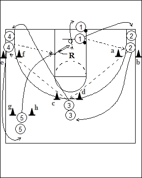

Catégorie : PASSES (Pas-013)
Déroulement
- Un ou deux joueurs avec ballons sous l’anneau. Une file de joueurs à hauteur des cônes a-b, une autre entre les cônes c-d, une autre derrière les cônes e-f et une dernière entre les cônes g-h.
- Le premier joueur 1 passe au premier de la file 2 qui prolonge vers le premier de la file 3 qui passe au premier de la file 4; celui-ci effectue la dernière passe pour un lay-up au premier joueur de la file 5.
- Après leurs passes, les joueurs avancent d’une file, donc 1 va en 2, 2 en 3, 3 en 4, 4 en 5. Après son lay-up, 5 va dans la file 1.
Coaching points
- C’est un drill de passes. Donc insister sur la qualité de celles-ci.
- Cet exercice peut également trouver place au niveau des échauffements.